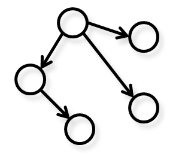

I am interested in human-computer interactions and machine learning applied to engineering and art design.
My
dissertation focused on eliciting user preferences through interactions.
My current research focuses on developing tailored learning algorithms for various
engineering and design applications.
Current Research

|
Interactive preference elicitation
"What kind of car style do you like?" While you may have serious opinions on such a topic, getting your preferences across to other people is not easy, even if you are a designer. My colleagues and I are devoted to enhance the communication between consumers and product developers by creating online interactions to collect rich data from both sides and incorporating tailored learning methods to recover and share knowledge from that data. Our recent paper on identifying the most preferred products of a user in an online-shopping environment can be found here. |
|  |
Learning configuration designs
Real-world design problems often involve not only proportional but also configuration (architecture) designs. While the former can be addressed using well-developed optimization techniques, the search of an optimal configuration usually requires enumeration and can be intractable. A heuristic search will thus be preferred only if we can tell what makes good configurations different from others. We are interested in tailoring interesting to investigate whether modern learning algorithms for structured data to meet this need. We are currently optimizing the configuration of a hybrid powertrain with multiple driving modes. As the first step, an exhaustive configuration generation mechanism is tested with optimal control nested. The paper can be found here. This work will be combined with the crowdsourcing platform to allow better design automation based on knowledge learned from crowd designers. |

|
Recovering crowd evaluations
In crowdsourcing design competitions, crowd-submitted designs are evaluated by another crowd. The crowd may contain true experts who can correctly tell the pros and cons of the submitted designs, among others who have more randomness in their evaluations. How can we identify the experts and estimate scores for the submissions? Our pilot study comparing a Bayesian network and simple averaging sheds light on this question. |